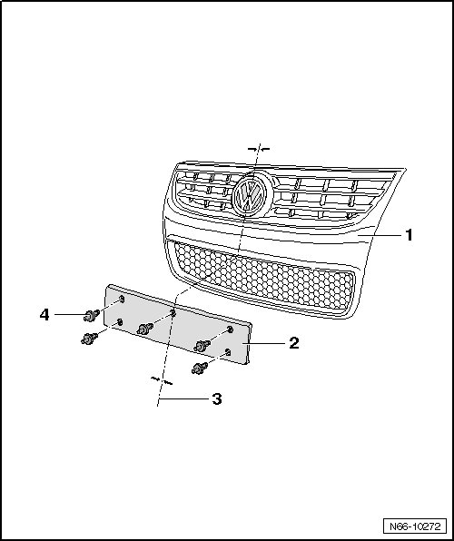

License Plate Holder, from 11.2006
Radiator Grille
License Plate Holder, from 11.2006

- Hold license plate holder - 2 - on radiator grille - 1 - and center it - arrows -.
- Set the drill stop depth to 12 mm and drill 8 mm dia. holes.
- Mark mounting points and drill holes.
- Secure license plate holder - 2 - with expanding clips - 4 - on radiator grille.